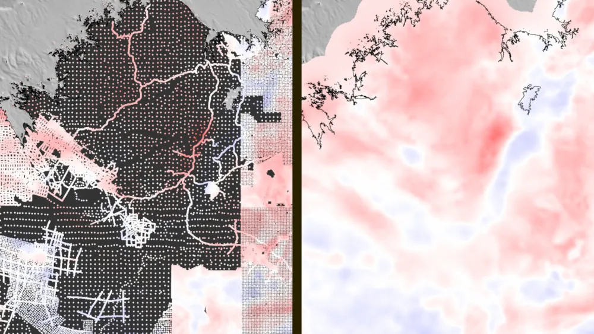
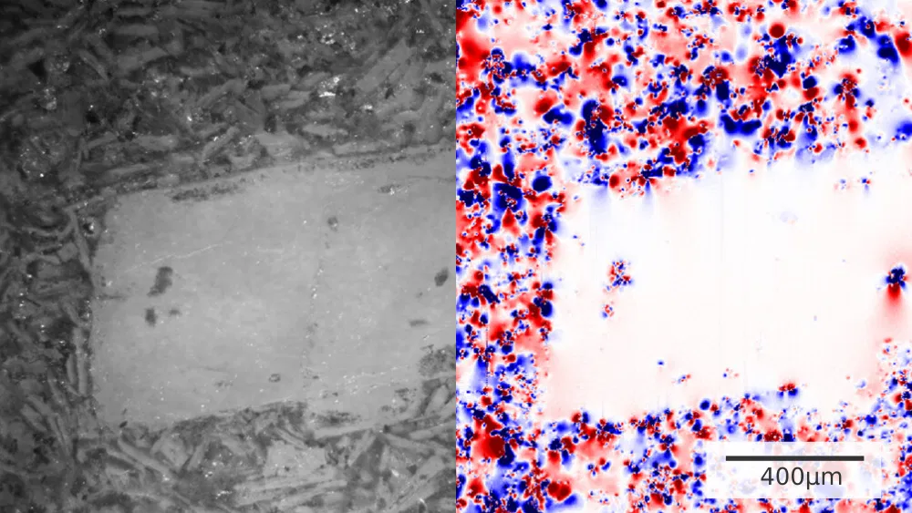
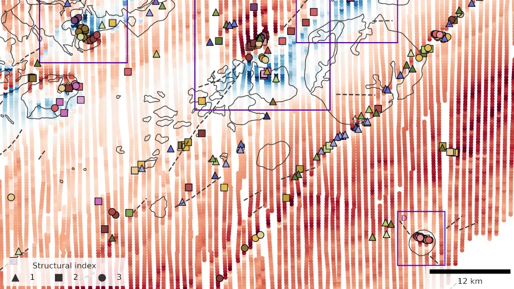
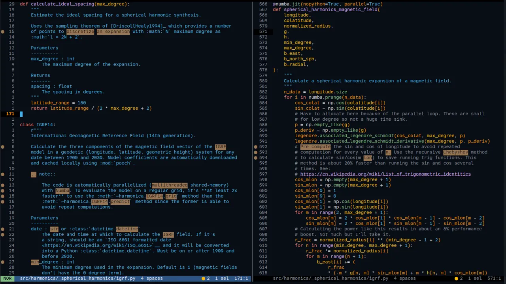

Our research themes
We focus our efforts on creating and applying new methods for solving inverse problems in geophysics applied to 3D modeling and data processing, mostly for gravimetry and magnetometry (AKA potential-field methods). Below, you’ll find the main research themes that we pursue.
Data integration and interpolation
Geoscientists have been dealing with problems of integrating and interpolating unevenly distributed data for decades. Many of our approaches have similarities with machine learning problems. For example the equivalent sources technique (used in gravity and magnetics) and spline interpolation are basically supervised-learning methods. Given the many similarities, it makes sense to apply and adapt machine learning techniques and best-practices to these geophysical problems.
At the lab, we are employing machine-learning methods like ensemble techniques and cross-validation to overcome key computational challenges in equivalent-source methods and data interpolation (AKA gridding).

Examples of our work on this theme:
Magnetic microscopy
The magnetization that gets locked in some minerals (known as ferromagnetic minerals) at the time of their formation is one of a few gateways we have into the Earth’s distant past. So far, researchers have mostly only been able to make bulk measurements of magnetization from collected rock samples. Emerging magnetic microscopy technology is now allowing us to image thin-sections and distinguish the magnetic fields of the individual minerals that make up the rock sample.
Our group is collaborating with experts in paleomagnetism to develop new methods and software for data processing and interpretation, unlocking the huge potential of these exciting new datasets.

Subsurface imaging
Our ultimate goal as geophysicists is to understand the inner structure and dynamics of the Earth from surface observations. This is a tough mathematical and computational problem: it’s an ill-posed inverse problem, to which a solution might not exist, not be unique, and not be stable.
We develop methods to overcome these challenges and solve different kinds of inverse problems that arise in geophysics.

Examples of our work on this theme:
Free software development
Software underpins everything we do as geoscientists. We have a strong commitment developing free and open-source software to support not only our own research efforts, but those of our entire community. Software development is also a way for us to help train new generations on advanced topics and build human capacity within geoscience.
Our group works mostly on Fatiando a Terra, a collection of Python libraries for geophysics. Leo was also the creator of PyGMT and a core contributor to the Generic Mapping Tools (GMT).

Examples of our work on this theme: